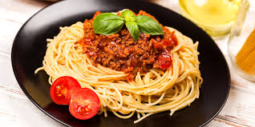

Откройте мир вкусовых ощущений
Более 5000 проверенных рецептов от шеф-поваров и домашних кулинаров

🔥 Популярное 👨🍳 Шеф-рецепт
👨🍳 Шеф-рецепт
Более 5000 проверенных рецептов от шеф-поваров и домашних кулинаров

🔥 Популярное
👨🍳 Шеф-рецепт
Выберите то, что вам по вкусу
156 рецептов
423 рецепта
289 рецептов
198 рецептов
167 рецептов
234 рецепта
Рецептов
Кулинаров
Оценок
Комментариев